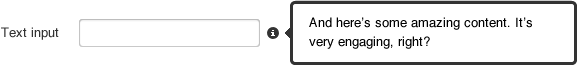
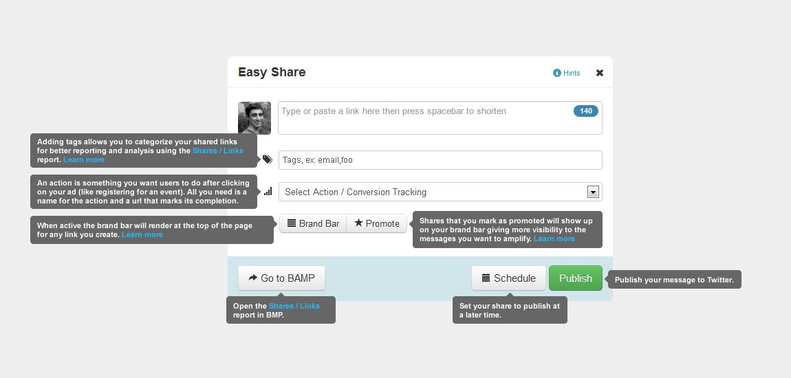
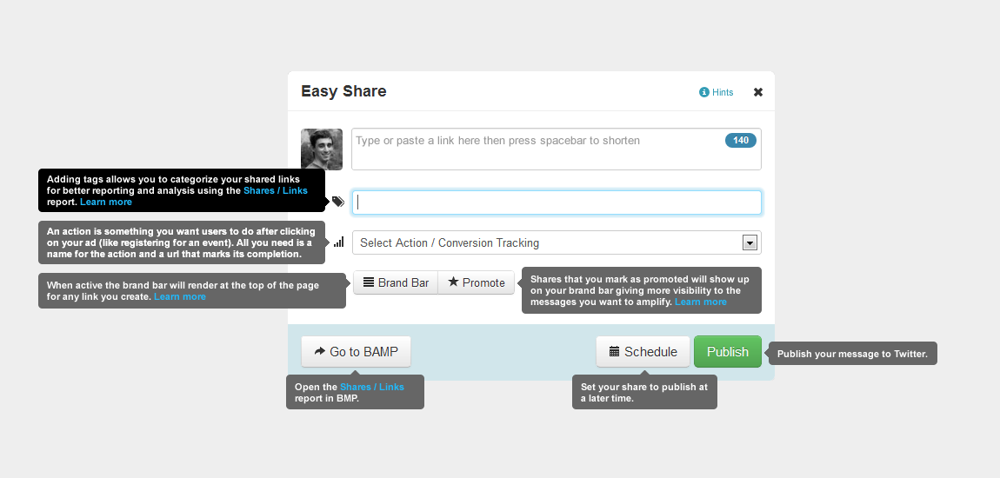

Business Audience Marketing
Contextual help is help available to the user along with its subject functions, without requiring an external document. Contextual help may link to external help documents for topics that are too long to be covered in-context.
The Bizstrap alert and alert-info classes provide the basic form of the in-line help box. The box should be displayed immediately beneath a header and immediately above the functionality it references, when active. In most cases, the box should be made collapsible. To make the box collapsible, include the "close" button in the upper right corner, but when the button is clicked, dismiss the box and show the label for the box type (example: FAQ) immediately after the header above. If the label is clicked, expand the help box to its open state and hide the label in the header row. When the label is hovered over, show a slight glow to indicate clickability. Hide all in-line help boxes by default.
In rare cases it may make sense to remove the collapse option, or to make the box completely dismissable.
If the in-line help box contains frequently asked questions, include a title and follow it with "FAQ" in a label-info label. Make the questions expandable/collapsible using the plus and minus sign glyphicons
The content of the box should be kept as brief as possible. If it exceeds one paragraph, it should either be condensed or moved into a separate help document and linked from within the help box. If the content exceeds four lines (including title), shorten the box to hide anything below and allow the user to click to expand the box and show the full contents. Use this sparingly.
Show more
When the box is expanded, it's content should not exceed 8 lines (not including dynamically shown question answers). If more help content is available, link to it in an external document as shown.
The glyphicon icon-info-sign provides the visual cue that field level help is available. Ideally the icon should be placed to the right of the subject element. When the icon is hovered over, show a version in Bizo Light Blue (#0095D5) to indicate clickability. When the user clicks the icon, show the help popover.
If the content of the popover is more than five lines tall, cap its height and include a scrollbar for viewing more content.
When the help is activated, show the popover to the right of the icon if space provides so that the help content can be in-line with its subject. If there is insufficient space to the right, show the popover below the icon.
Button hints are very short text hints displayed in a tooltip when the user hovers over the button. They should be placed to the left or below the button, depending on where it makes sense in the UI. Content in the button hint should not exceed 4 lines, though it is OK to include links to an external help doc.
Field help text is subtle text that accompanies a field and provides important information for using the field. The text must be kept extremely brief. If more information is required, consider using an in-line help box or linking to an external help document. Depending on whether the form is a standard BMP form or a small form used in a modal or widget, the field help text may be placed either to the right or below the control as defined in Forms.
Help text
Help text
Note: This design pattern won't be implemented in the September release due to resource constraints, but I'm keeping it here for later.
Several controls on the interface have tooltips associated with them. Instead having a separate button to launch each tooltip, there is a single button used to activate all tooltips at once. When the button is clicked and the help text is active, the user may continue to use the rest of the interface as normal. Clicking the help button again deactivates all help messages.
In the active state, all tooltips must be small enough to not overlap each other or any content of the interface.
When a control in the interface has focus, any tooltip associated with it highlights to become more prominent.
